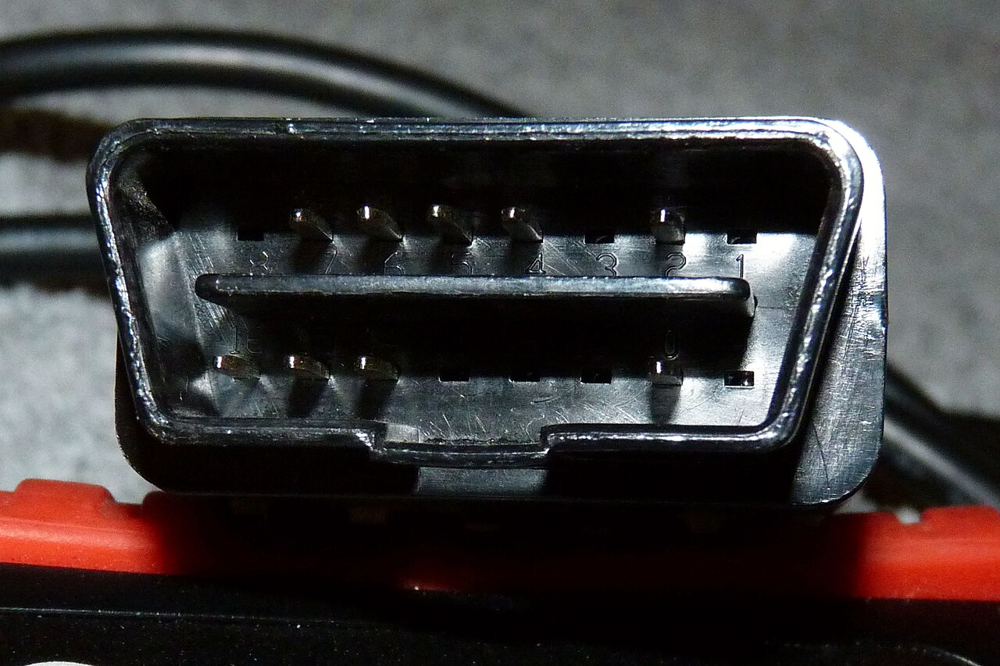

RACELINK ACADEMY
TikTok & Instagram
Les vidéos auto des créateurs, classées par voiture et par sujet.

Chargement…
Une voiture citée dans une vidéo ne garantit pas la compatibilité avec votre version.
RACELINK ACADEMY
Les vidéos auto des créateurs, classées par voiture et par sujet.

Une voiture citée dans une vidéo ne garantit pas la compatibilité avec votre version.